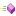

Documentation ISO/COFRAC - DLCF
PREREQUIS pour certains documents: CONNEXION
GedOQ
ETABLIE
LOGIN : visudlcf - pas de mot de passe
Une fois la connection établie dans un nouvel onglet, fermer le pour revenir à l'explorateur documentaire ci présent
Pour maintenir les documents sur Github :
http://github.com/alexandrecuer/gedoq
circuit de l'information métrologique au DLCF
|
logigramme de traitement des réclamations au DLCF
|
documents COESION/COFRAC cerema
|
Suivi des documents COFRAC opposables
|
plan de transition ISO17025v2017
|
Imprimer la liste des documents qualité
COLIBRI : outil de suivi des enquêtes satisfaction et dématérialisation des livrables
Voir les liens locaux
Légende
Manuel ou Plan qualité
Procèdure
Instruction
Document modèle
Enregistrement
 Procèdure
Procèdure Instruction
Instruction